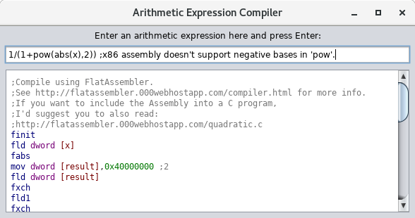
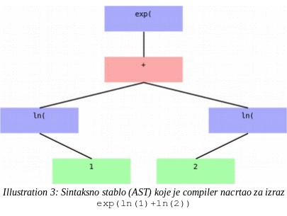
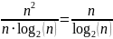

Implementacija QuickSort algoritma u AEC-u
Autor: Teo Samaržija
Sažetak: AEC je pojednostavljeni niski programski jezik koji je autor osmislio za potrebe komuniciranja sa svojim jednostavnim compilerom, koji je radio u nastojanju da bolje shvati kako funkcioniraju compileri. U ovom seminaru opisuje se autorov pokušaj da efikasno implementira QuickSort (quick na engleskom znači brz, a sort znači razvrstati), jedan od najčešće korištenih algoritama razvrstavanja prema nekoj poredbenoj funkciji, u tom jeziku. Također se opisuje i pokušaj da se tehnikom mekanog programiranja (točnije, genetskim algoritmom) dođe do formule koja će predviđati koliko će usporedbi QuickSort napraviti na nekom nizu prije no što ga razvrsta do kraja. Naivni genetski algoritam, nažalost, došao je do formule koja relativno dobro opisuje ponašanje QuickSorta na velikim nizovima (za koje mu je autor dao rezultate mjerenja), ali koja drastično precjenjuje broj usporedbi koje će QuickSort napraviti za male već razvrstane nizove.
O AEC-u
AEC (kratica od Arithmetic Expression Compiler – sastavljač aritmetičkih izraza) je, kao što piše u sažetku, pojednostavljeni niski (relativno blizak asemblerskom) programski jezik koji je autor osmislio za potrebe komuniciranja sa svojim jednostavnim compilerom. Osmišljen je da bude, prije svega, jednostavan za prevoditi na asemblerski jezik, a da ipak nema previše zbunjujuću sintaksu (jezik sličan LISP-u možda bi bio još lakšim za prevoditi na asemblerski jezik, jer ga je lakše parsirati, no autor smatra da LISP ima previše zbunjujuću sintaksu, barem za ljude koji s njom nisu uopće upoznati). Autor je napravio nekoliko odluka koje bi jezik učinile lakši za prevoditi na asemblerski jezik, ali koje bi znatno otežale proširivanje jezika: compiler zahtijeva da programer sam deklarira varijable u umetnutim isječcima asemblerskog koda, jezik podržava samo jedan tip podatka (32-bitni decimalni broj), nizovi se podataka tretiraju kao asemblerske funkcije, te parser podržava samo funkcije s do dva argumenta i funkcije koje nisu uprogramirane u parser mogu imati samo jedan argument.
O compileru za AEC
Compiler za AEC pisan je u JavaScriptu i C-u, povezanih preko Duktape radnog okvira. Duktape (engleski za ljepljiva traka, u smislu radni okvir koji spaja dva veoma različita programska jezika) je interpreter za JavaScript pisan u cijelosti u C-u, po standardu C99 (koji prihvaća svaki današnji compiler za C), dostupan pod MIT licencom. Dakle, compiler za AEC sastoji se od četiri datoteke koda: aec.c, compiler.js, duktape.c i control.js1, od kojih je aec.c, compiler.js i control.js napisao sam autor, i ukupno te tri datoteke imaju oko 2'000 redaka koda. Aec.c sastoji se od potprograma za inicijaliziranje Duktapea, funkcije koja, na zahtjev od compiler.js, pretvara decimalne brojeve u heksadekadski2 IEEE 754 zapis (pomoću C-ove poznate naredbe sprintf), potprograma koji čita sadržaj .aec datoteke (gdje je spremljen neki kod na jeziku AEC) i šalje ga do control.js, potprograma koji na zaslon ispisuje poruke o pogrešci koje mu šalje compiler.js, te potprograma koji zapisuje asemblerski kod koji mu šalju control.js i compiler.js u .asm datoteku. Funkcija za pretvorbu decimalnog broja u heksadekadski, na primjer, izgleda ovako:
static duk_ret_t getIEEE754(duk_context *ctx)
{
static char polje[16];
float broj=duk_to_number(ctx,0);
sprintf(polje,"0x%X",*(int*)(&broj));
duk_push_string(ctx,polje);
return 1;
}
duk_ret_t (malim početnim slovom, važno je jer C razlikuje velika i mala slova) je cijeli broj koji označava koliko smo podataka vratili u JavaScript. duk_context (ponovno, malim početnim slovom, inače je to u C-u gramatički netočno) je JavaScriptina virtualna mašina. duk_to_number vraća podatak koji je na vrhu sistemskog stoga JavaScriptine virtualne mašine, pod pretpostavkom da je taj podatak broj (ako nije, program prestaje s radom s porukom o fatalnoj pogrešci). duk_push_string stavlja niz znakova na vrh sistemskog stoga te JavaScriptine virtualne mašine, tako da ga program koji se pokreće na njoj može čitati.3
Control.js sastoji se od jedne dugačke funkcije koja prima jednu liniju koda od aec.c (naravno, posredstvom duktape.c-a), ekstrapolira aritmetički izraz iz nje, šalje taj izraz do compiler.js, te obradi ostatak te linije. Recimo, ako linija AEC-ovskog koda glasi If a<b, tada se a<b šalje do compiler.js, a If se zasebno obrađuje. U JavaScriptu to izgleda ovako:
if (/^If/.test(str))
{
var arth=str.substr("If ".length);
parseArth(tokenizeArth(arth)).compile();
asm("fistp dword [result]");
asm("mov eax,[result]");
asm("test eax,eax");
var label1="l"+(Math.floor(Math.random()*1000000));
var label2="l"+(Math.floor(Math.random()*1000000));
stack.push(label2);
stack.push(label1);
asm("jz "+label1);
hasElse.push(false);
}
/^If/ je regularni izraz koji prihvaća svaki niz znakova čiji je prvi znak 'I' (veliko slovo 'i'), a drugi znak malo slovo 'f'. parseArth (da, i JavaScript razlikuje velika i mala slova, i bilo bi pogrešno napisati ParseArth) i tokenizeArth su potprogrami koje je autor napisao u datoteci compiler.js. tokenizeArth prima od control.js niz znakova koji predstavljaju aritmetički izraz, a potprogramu koji ga je pozvao (upravo control.js-u) vraća niz sastavljen od nizova znakova. Zatim control.js šalje taj niz nizova znakova potprogramu parseArth. Ovakvu skraćenu gramatičku konstrukciju omogućuje to što su potprogrami parseArth i tokenizeArth u compiler.js deklarirani kao funkcije. Glavni razlog zašto sam ih deklarirao kao funkcije, a ne kao module, je to što sam često koristio zastarjele ili namjerno ograničene interpretere za JavaScript, a mnogi od njih ne podržavaju module (ni Internet Explorer ni Duktape ih ne podržavaju). compile je metoda koju imaju objekti koje stvara prototipna funkcija Token, a koje pozivatelju vraća parseArth. Metoda i prototipna funkcija su termini iz naprednog objektivnog orijentiranog programiranja, nije važno ako ne znate što znače. U slučaju da to nekog utješi, starije verzije JavaScripta (a značajke novijih verzija JavaScripta nisu korištene u ovom programu da se ne naleti na probleme s kompatibilnosti) nisu imale klase, nego se u njima objektivno orijentirano programiranje radilo na malo drukčiji način nego u drugim jezicima. Prototipna funkcija približno odgovara konstruktoru u drugim jezicima. asm je potprogram koji preko Duktapea do aec.c šalje niz znakova (ako je sve u redu, na gramatički točnom i smislenom asemblerskom jeziku) koji se treba napisati u datoteku .asm, a potprogramu koji ga je pozvao ne šalje ništa.
Jezgra compilera je, naravno, datoteka compiler.js. U nesažetom obliku ona sadrži nešto manje od 1700 redaka. Da opišem kako kod u njoj funkcionira, vjerojatno je najjednostavnije da je podijelim na četiri dijela: dio uglavnom neovisan o okruženju u kojem se vrti, dio koji pretpostavlja da okruženje u kojem se vrti može interpretirati osnovni HTML, dio koji pretpostavlja da okruženje u kojem se vrti podržava i osnovni HTML i osnovni DOM (Document Object Model – objektivni model dokumenta - protokol kojim programi kao što su Trident, ugrađen u Internet Explorer, Gecko, ugrađen u Firefox, Blink, ugrađen u Chrome, ili WebKit, ugrađen u Safari i Android Stock Browser, komuniciraju s programima pisanima u JavaScriptu), te dio koji pretpostavlja da okruženje u kojem se pokreće podržava napredni HTML, relativno napredni DOM i osnovni SVG (Scalable Vector Graphics – vektorska grafika promjenjive veličine - protokol kojim JavaScriptski programi mogu reći Tridentu i sličnim programima da crtaju vektorsku grafiku). Ovdje u Duktapeu samo se dio koji je uglavnom neovisan o okruženju u kojem se vrti može vrtjeti. To uključuje već spomenute potprograme tokenizeArth, tokenizer, parseArth, parser, te metode koje imaju objekti koje stvara funkcija Token, uključujući compile, po kojoj se ovaj program i zove compiler, te interpret, evaluator aritmetičkih izraza koje je parseArth već parsirao. Kažem da je uglavnom neovisan, jer on na jednom mjestu pita okruženje u kojem se vrti (Duktape, SpiderMonkey, V8, Chakra, Rhino...) zna li što znači getIEEE754, rečenicom if (typeof getIEEE754 != "function"). To je zapravo riječ koju je autor ovog teksta izmislio, i JavaScriptinom okruženju što to znači treba objasniti neki potprogram koji nije pisan u JavaScriptu, kao što je gore napravljeno u C-u. Compiler za AEC cilja ponajprije da u .asm ispisuje kod koji je kompatibilan s compilerom za asemblerski jezik koji se zove FlatAssembler. No, on isto tako cilja i da se asemblerski kod koji on ispiše lako prebaci na neki drugi asemblerski compiler. FlatAssembler može sam pretvarati decimalne brojeve u IEEE754 zapis, kakav se nalazi u strojnom jeziku (nule i jedinice koje računalo može razumjeti bez pomoći dodatnih programa). No, većina compilera za asemblerski jezik ne zna sama pretvarati decimalne brojeve u IEEE754. Također, nije očito kako pretvoriti decimalni broj u IEEE754 zapis u starijim verzijama JavaScripta, a da se dobije najveća preciznost koju 32-bitni IEEE754 zapis dopušta. No, očito je kako to napraviti u C-u, i u brojnim drugim jezicima. Vjerojatno je moguće to napraviti u modernom JavaScriptu koristeći nizne sabirnice (ArrayBuffer), no ni to nije baš očito kako.
Tokenizer je dio compilera koji razdvaja riječi iz programskog jezika, koji ostalim dijelovima compilera označava gdje završava koja riječ. Kao primjer kako funkcionira taj moj tokenizer, dat ću dio programa koji provjerava jesu li brojevi ispravno napisani (sadrži li možda decimalni broj dvije decimalne točke...):
if (ret[i].charAt(0) >= '0' && ret[i].charAt(0) <= '9')
{
var decimal = 0;
for (var j = 0; j < ret[i].length; j++)
{
if (decimal && ret[i].charAt(j) == '.' || (ret[i].charAt(j) < '0' || ret[i].charAt(j) > '9') && ret[i].charAt(j) != '.')
{
alert("Tokenizer error: Can't assign the type to the token \'" + ret[i] + "\'.");
alerted = 1;
return ret;
} else if (!decimal && ret[i].charAt(j) == '.')
decimal = 1;
}
}
Ovdje alert, ukoliko se program vrti u internetskom pregledniku, prikazuje skočni prozor s porukom o pogrešci. Inače, on baca niz znakova koji mu je dan kao argument (između okruglih zagrada '(' i ')') kao iznimku (engleski exception, način na koji se, u objektivno orijentiranom programiranju, potprogrami međusobno obavještavaju o pogreškama). U Duktapeu ta se se iznimka onda, kako je compiler.js nigdje ne hvata, šalje u control.js, pa zatim u Duktape, pa zatim Duktape poziva C funkciju iz aec.c koja mu je zadana za ispisivanje poruka o pogrešci. Ta funkcija također ispisuje i redak programa pisanog u AEC-u gdje je do pogreške došlo. Smatram da se iz ovoga može shvatiti kako funkcionira tokenizer tog compilera za AEC.
Parser je dio compilera koji ostalim dijelovima compilera označava koja je riječ u programskom jeziku sintaksno povezana s kojom. To se radi pravljenjem sintaksnih stabala u memoriji. Većina compilera, još od doba prvih viših programskih jezika, za parsiranje aritmetičkih i logičkih izraza koristi Dijkstrin Shunting-Yard algoritam. Njegova prednost je to što se vrti u linearnom vremenu. Compiler za AEC ga ne upotrebljava, nego je autor osmislio svoj algoritam koji se lako iskaže u JavaScriptu. On se vrti u kvadratnom vremenu ako nema zagrada, te u kubnom vremenu ako ima zagrada. Iako je to u teoriji mnogo lošije od Shunting Yarda, u praksi se na današnjim računalima čak i najduži izrazi koji se u praksi nalaze u programima compiliraju u zanemarivo kratkom vremenu. Kao primjer kako funkcionira parser u compileru za AEC, evo koda koji radi s logičkim operatorima & (logičko I) i | (logičko ILI):
for (var i = 0; i < arth.length; i++)
if ((arth[i].text == '&') && !arth[i].operands.length)
{
if (arth.length - 1 == i || !i)
{
alerted = 1;
alert("Parser error: The binary operator \'" + arth[i].text + "\' has less than two operands.");
return arth[0];
}
arth[i].operands.push(arth[i - 1]);
arth[i].operands.push(arth[i + 1]);
arth.splice(i - 1, 1);
arth.splice(i, 1);
i--;
}
for (var i = 0; i < arth.length; i++)
if ((arth[i].text == '|') && !arth[i].operands.length)
{
if (arth.length - 1 == i || !i)
{
alerted = 1;
alert("Parser error: The binary operator \'" + arth[i].text + "\' has less than two operands.");
return arth[0];
}
arth[i].operands.push(arth[i - 1]);
arth[i].operands.push(arth[i + 1]);
arth.splice(i - 1, 1);
arth.splice(i, 1);
i--;
}
for-petlja koja traži &-e izvršava se prije for-petlje koja traži |-e jer logički operator & u AEC-u, kao i u većini programskih jezika, ima veći prioritet od logičkog operatora |. Gotovo identičan algoritam je za aritmetičke operatore. Dakle, taj program opet i opet prolazi kroz niz Token-a zvan arth. Kada se zadovolje uvjeti za to, prethodni i sljedeći element tog niza dodaju se u polje operands, koje je svojstvo (engleski property, u objektivno orijentiranom programiranju, to je objekt ili varijabla koji se nalaze u drugom objektu) Token-a (prije tih for-petlji, operands je za svaki element tog polja prazan niz), te se JavaScript naredbom splice brišu iz niza arth. Ako je sve u redu (nema unexpectednih tokensa, neočekivanih oznaka), na kraju parsiranja u arth-u je samo jedan Token, koji je onda korijen sintaksnog stabla. Ako je tako, parseArth šalje potprogramu koji ga je pozvao prvi element niza arth, inače javlja grešku unexpected token.
Jedna od zanimljivosti o AEC-u je da u njemu mogu postojati gramatičke iluzije, rečenice koje se mogu parsirati, a da su zapravo sintaksno još uvijek netočne i nemaju značenje. Poznati primjer za to u ljudskim jezicima je rečenica More people have been to Russia than I have. – zvuči prihvatljivo kad je čujemo, ali kada razmislimo što bi mogla značiti, vidimo da se ne može niti gramatički analizirati. Zato, nakon što je parser završio s radom, poziva se sljedeća funkcija koja se pobrine za gramatičke iluzije:
function checkAST(node) //Postoje li "gramaticke iluzije", izrazi koji se mogu parsirati, ali ne znace nista (recimo "5**").
{
if ((node.text == '*' || node.text == '-' || node.text == '/'
|| node.text == '=' || node.text == '<' || node.text == '>'
|| node.text == '&' || node.text == '|')
&& node.operands.length < 2 && !alerted)
{
alerted = 1;
alert("Parser error: Unexpected token \'" + node.text + "\'.");
}
for (var i = 0; i < node.operands.length; i++)
checkAST(node.operands[i]);
}
Kako je FPU arhitektura bazirana na stogu, relativno je lagano compilirati AST (sintaksno stablo) u njezin asembler. U biti, compiler pokrene rekurziju u korijenu AST-a, a ta rekurzija prvo pokrene rekurziju u svakom potomku (elementu polja operands) Tokan-a, i zatim šalje poruku dijelu programa koji ispisuje .asm datoteku s prijevodom svog text-a na asembler. Mali problem je to što FPU-ov stog može držati samo 8 brojeva, pa će naivna implementacija takvog algoritma u asemblerskom programu za duže izraze vjerojatno uzrokovati stack overflow. Rješenje je prvo pozvati rekurziju za Token u polju operands s manje razina potomaka, a koliko koji Token u stablu ima razina potomaka, određuje se DFS algoritmom s memoizacijom:
var zamijeni = false;
if (this.operands.length > 1 && this.operands[0].DFS() < this.operands[1].DFS())
{
zamijeni = true;
var tmp = this.operands[0];
this.operands[0] = this.operands[1];
this.operands[1] = tmp;
}
for (var i = 0; i < this.operands.length; i++)
this.operands[i].compile();
if (zamijeni)
asm("fxch");
Gdje je DFS definiran kao:
ret.DFS = function () // Pokusat cu izbjeci stack overflow tako da se prvo kompajliraju "dublji" izrazi.
{
if (this.depth)
return this.depth;
if (!this.operands.length)
this.depth = 1;
else
for (var i = 0; i < this.operands.length; i++)
this.depth = Math.max(this.depth, this.operands[i].DFS() + 1);
return this.depth;
}
Nakon toga slijedi niz else-if-ova kao što su:
else if (this.text == "sqrt(")
fsqrt();
else if (this.text == "arcsin(")
fasinp();
else if (this.text == "arccos(")
facosp();
Potprogrami koji se ovdje spominju imaju svoje definicije, nekad jednostavne, a nekad relativno složene. Recimo, facosp je definiran kao:
function facosp() // -||- arkus kosinus (po formuli pi/2-arcsin(x))
{
asm("fstp dword [result]");
asm("fldpi");
asm("fld1");
asm("fld1");
faddp();
fdivp();
asm("fld dword [result]");
fasinp();
fsubp();
}
Evo, nadam se da sam objasnio kako funkcionira jezgra compilera za AEC. Interpretiranje aritmetičkih izraza je trivijalno, samo se u else-if-ovima grana rekurzija:
else if (this.text == "+")
return this.operands[0].interpret() + this.operands[1].interpret();
else if (this.text == "-")
return this.operands[0].interpret() - this.operands[1].interpret();
No, kao što sam već spomenuo, to je samo dio onoga što se nalazi u compiler.js. U compiler.js nalazi se i dio koji će se vrtjeti u okruženju koje podržava osnovni HTML, ali ne i osnovni DOM. To je dio za sintaksno bojanje koda.

Illustration
1:
Sintaksno bojanje asemblerskog koda funkcionira u okruženju od
radnih okvira Rhino i Swing, iako ni jedno od njih ne podržava
DOM, zato što Swing podržava HTML
Datoteku
compiler.js
koristio
sam i u programu Simple Calculator4,
tamo sam u programskom jeziku Java stvorio okruženje od
Mozillinog radnog okvira Rhino (za just-in-time
prevođenje JavaScripta u binarni kod kompatibilan s Java
virtualnom mašinom) i Oracleovog radnog okvira za aplikacije s
grafičkim sučeljem Swing. Swing podržava osnovni HTML,
ali ne i DOM. Ipak, kod za sintaksno bojanje asemblerskog koda može
se vrtjeti u takvom okruženju.
Illustration
2:
Kada se pokrene u internetskom pregledniku, compiler za AEC izgleda
kao aplikacija na starim verzijama Windowsa
Programski kod u compiler.js ima i dio koji se vrti samo u modernim internetskim preglednicima, to jest koji podržavaju napredni HTML i DOM te barem osnove SVG-a. Taj dio koda crta AST-ove pomoću SVG-a. U starijim je internetskim preglednicima jedini način prikazivanja AST-a pretvaranje AST-a u LISP-ove S-izraze, koji su početnicima u programiranju vjerojatno još više zbunjujući nego aritmetički izrazi kojima su dodane zagrade. Grafička reprezentacija jednostavnih AST-ova kakvu daje compiler za AEC u modernim internetskim preglednicima vjerojatno može pomoći početnicima u programiranju da shvate koncept AST-a, a samim time i parsiranja.
Internetski preglednik koji je dovoljno moderan da se taj potprogram za crtanje AST-a pokrene danas se može staviti na gotovo svako računalo ili mobitel, on radi u Internet Exploreru 11. Iako neka računala ili mobiteli još uvijek imaju manje moćne internetske preglednike, gotovo bi svaki mogao pokrenuti dovoljno moderan preglednik kada bi se instalirao na njega.

Objašnjenje programa za razvrstavanje pisanog u AEC-u
Krenimo, konačno, na objašnjenje programa za razvrstavanje pisanog na programskom jeziku AEC6. Autor ovog teksta napisao je skriptu za Notepad++ koja sintaksno oboji kod pisan u AEC-u7, te je naredio Notepad++-u da ga izveze u RTF datoteku (koja se može otvoriti u LibreOfficeu) zajedno s brojevima koje označuju linije koda, tako da će ovdje biti moguće umetnuti sintaksno obojeni AEC.
;Implementacija QuickSort-a.
AsmStart ;Umetnuti Assembler pocinje ovako, a zavrsava sa "AsmEnd".
ispisPoruka=1 ;Ovako se rade pretprocesorski definesovi u FlatAssembleru.
debug=0
macro staviIntNaSistemskiStog x ;Da, ima on mocan pretprocesor.
{
sub esp,4
fld dword [x]
fistp dword [esp]
}
macro staviPokazivacNaSistemskiStog x
{
sub esp,4
lea ebx,[x]
mov [esp],ebx
}
macro staviStringNaSistemskiStog x
{
sub esp,4
mov dword [esp],x
}
U ovom programu pozivat ću mnoge naredbe iz C-a. Za to ću koristiti umetnuti Assembler. Kako je pozivati C-ove naredbe iz asemblerskog koda ponavljajuće i sklono greškama, napravio sam par FlatAssemblerskih makro-naredbi koje će mi u tome pomoći. StaviIntNaSistemskiStog (u 5. retku) je možda malo neprimjeren naziv, jer ono što ta makronaredba zapravo čini jest pretvoriti 32-bitni decimalni broj u 32-bitni cijeli broj (C-ov int), pa ga tek onda stavlja na sistemski stog. Komentari (dijelovi teksta na programskom jeziku koje compiler preskače, najčešće su ti dijelovi teksta zapravo pisani na engleskom jeziku, ovdje su pisani na hrvatskom), kao što vidite, i u FlatAssembleru i u AEC-u pišu se između znaka ';' (točka-zarez) i kraja retka.
format PE console ; 'PE' je 32-bitna '.EXE' datoteka za Windows. 'PE64' je 64-bitna '.EXE' za Windows. 'MZ' je '.EXE' za DOS. 'ELF' je izvrsna datoteka za 32-bitni Linux, a 'ELF64' za 64-bitni.
entry start
include 'win32a.inc' ; Naredbe za komunikaciju s DLL-ovima.
section '.text' code executable
start:
Dio koda od 22. do 28. linije ilustrira veliku razliku između AEC-a i drugih niskih programskih jezika: AEC očekuje da programer komunicira s asemblerskim compilerom o tome kako formatirati izvršnu datoteku. AEC compiler ne radi pretpostavke o tome kako će izvršna datoteka biti formatirana. C compileri to uvelike rade... i u tome nerijetko griješe, pogotovo kad programer želi raditi egzotične vrste izvršnih datoteka, kakve je znatno lakše raditi u asemblerskom jeziku nego u C-u.
if ispisPoruka=1 ; 'if' je ovdje assemblerska pretprocesorska naredba. 'If', s velikim 'i', je naredba grananja u AEC-u.
jmp velicinaUnosa$
velicinaUnosa db "Unesite koliko cete brojeva unijeti.",10,0
velicinaUnosa$:
Ovo sigurno izgleda čudno nekome tko je upoznat s višim programskim jezicima, ali ne i s asemblerskim. Da, asemblerski jezik dopušta da u izvršni dio programa umetnete nizove znakova (koje su, naravno, nedopuštene instrukcije za procesor) i sve će biti u redu dokle god ih preskočite (recimo, naredbom jmp). I, da, možete potprogramima izvan vašeg programa (recimo, C-ovim naredbama) slati pokazivače na te nizove znakova, a da se program ne sruši. Ono 10,0 na kraju 31. retka označava znak za novi red i znak za završetak stringa (niza znakova), zato jer je mjestu 10 u ASCII tablici znak za novi red, a C-ove naredbe očekuju da niz znakova koji im se pošalje završava znakom koji je na mjestu 0 u ASCII tablici.
staviStringNaSistemskiStog velicinaUnosa
call [printf]
I ovo je primjer kako se pozivaju C-ove naredbe (u ovom slučaju printf) iz asemblerskog koda. U biti, trebamo se pobrinuti da esp (procesorski registar koji, u biti, pokazuje neko mjesto na sistemskom stogu) pokazuje na prvi argument, te da odmah nakon prvog argumenta (recimo, ako je prvi argument velik 4 bajta, onda na memorijskoj adresi esp+4) stiže drugi argument, i tako dalje. Barem je tako na Windowsima, na Linuxu i MacOS-u je znatno kompliciranije (tamo C-ove naredbe očekuju prvih nekoliko argumenata u procesorskim registrima).
end if
staviPokazivacNaSistemskiStog n
jmp znakZaFloat$
znakZaFloat db "%f",0
znakZaFloat$:
staviStringNaSistemskiStog znakZaFloat
call [scanf]
if ispisPoruka=1
jmp pitajZaUnos$
pitajZaUnos db "Unesite te brojeve:",10,0
pitajZaUnos$:
staviStringNaSistemskiStog pitajZaUnos
call [printf]
end if
AsmEnd
i:=0
brojac:=0
vrhStoga:=0
While i<n
pokazivac:=4*i
AsmStart
fld dword [pokazivac]
fistp dword [pokazivac]
lea ebx,[original]
add ebx,[pokazivac]
staviPokazivacNaSistemskiStog ebx
staviStringNaSistemskiStog znakZaFloat
call [scanf]
AsmEnd
i:=i+1
EndWhile
AsmStart
call [clock]
mov [procesorskoVrijeme],eax
C-ova naredba clock (pozvana u 67. retku) trebala bi vratiti 64-bitni cijeli broj, i problem je s time upravljati u asemblerskom kodu. No, na sreću, ona zadnja 32 bita vraća upravo u eax, gdje i funkcije koje vraćaju 32-bitne cijele brojeve vraćaju svoj rezultat, tako da se o tome ne moramo brinuti. Inače, clock na Windowsima programu koji je pozove vraća broj milisekundi (jedna sekunda ima 1000 milisekundi) koje su prošle otkad se taj program počeo vrtjeti.
AsmEnd
razvrstanost:=0
i:=0
While i<n-1
razvrstanost:=razvrstanost+(original(i)<original(i+1))
i:=i+1
EndWhile
razvrstanost:=razvrstanost/((n-1)/2)-1
Dakle, ovdje mjerimo do koje mjere je niz koji smo unijeli već razvrstan. To je važno da vidimo koliko je formula koju je izveo genetski algoritam za predviđanje broja usporedbi koje će QuickSort napraviti točna, više o tome kasnije.
i:=2
While i<7 | i=7 ;Kada nisam stavio operator "<=" u svoj jezik.
razvrstanostNa(i):=pow(abs(razvrstanost),i) ;Zato sto je "pow(x,y)" u tom mom jeziku samo sintakticki secer za "exp(ln(x)*y)", i to vraca "NaN" za x<=0. Nema ocitog nacina da se "pow" prevede na Assembler.
If razvrstanost=0
razvrstanostNa(i):=0
EndIf
If mod(i,2)=1 & razvrstanost<0
razvrstanostNa(i):=-razvrstanostNa(i)
EndIf
i:=i+1
EndWhile
;f(n,s)=exp((ln(n)+ln(ln(n)))*1.05+(ln(n)-ln(ln(n)))*0.83*abs(2.38854*pow(s,7)-0.284258*pow(s,6)-1.87104*pow(s,5)+0.372637*pow(s,4)+0.167242*pow(s,3)-0.0884977*pow(s,2)+0.315119*s))
I u 88. retku imate tu formulu, kasnije će pisati mnogo više o njoj. U biti, ovaj dio programa je dodan naknadno.
polinomPodApsolutnom:=2.38854*razvrstanostNa(7)-0.284258*razvrstanostNa(6)-1.87104*razvrstanostNa(5)+0.372637*razvrstanostNa(4)+0.167242*razvrstanostNa(3)-0.0884977*razvrstanostNa(2)+0.315119*razvrstanost
eNaKoju:=(ln(n)+ln(ln(n)))*1.05+(ln(n)-ln(ln(n)))*0.83*abs(polinomPodApsolutnom)
ocekivaniBrojUsporedbi:=exp(eNaKoju)
najmanjiCijeliBrojKojiSeMozeDodatiNaBrojac:=1
Ovo u 92. retku važno je zato što AEC podržava samo jedan tip podatka, 32-bitni decimalni broj. On može prikazati mnogo veće i mnogo manje brojeve nego što može 32-bitni cijeli broj, no zato može prikazivati samo otprilike prvih 7 znamenki tih brojeva. Zato kada izbrojimo do nešto manje od 17 milijuna, dodavanje jedinice na brojač više nema efekta. No, dodavanje dvojke još će jedno vrijeme imati efekta. Nakon što ni dodavanje dvojke ne bude imalo efekta, još će jedno vrijeme dodavanje četvorke imati efekta, i tako dalje. Trenutak kada dodavanje broja koji dodajemo više nema efekta, zove se preljev (engleski overflow).
pomocniBrojac:=0
Pomoćni brojač je važan jer, kada jednom dodavanje jedinice više ne bude imalo efekta, ne smijemo dodati dvojku svaki put kad se izvrši petlja čiji broj izvršavanja želimo izbrojati, već svaki drugi put.
Sada slijedi glavni dio programa, implementacija QuickSort algoritma. QuickSort algoritam bazira se na činjenici da je moguće u linearnom vremenu preurediti niz tako da se svi elementi manji od onog koji je prije bio prvi (pivot) stave prije njega, a svi veći ili jednaki njemu nakon njega. Ima nekoliko načina da se to učini, a najjednostavniji je najvjerojatnije pomoću pomoćnog niza. Trik je u tome da, kada smo to napravili za jedan element, koji je sada došao negdje na sredinu niza, ne moramo opet proći kroz čitav niz da bismo to napravili za neki drugi element, nego samo kroz približno polovicu niza. Naime, kada nakon toga brojimo koliko elemenata ima u nizu koji su manji od elementa koji je sada prvi, ne moramo brojati dalje od pivota (onog elementa koji je prije bio prvi), jer elementi nakon pivota ne mogu više biti manje od elementa koji je sada prvi u nizu. Tako se broj izvršavanja unutrašnje petlje stalno raspolavlja, a, naravno, ako se stalno raspolavlja, potrebno mu je log2(n) raspolavljanja da dođe do jedinice. Na taj se način QuickSort izvršava u linearitmičnom vremenu n*log2(n). To je mnogo brže od kvadratnog vremena za koje se vrte naivni algoritmi razvrstavanja elemenata po veličini, kao što je odabirno razvrstavanje (SelectionSort).
SelectionSort je mnogo sporiji od QuickSorta ukoliko je uspoređivanje dva elementa spora operacija, recimo, uspoređivanje koji niz znakova ide prije po ASCII abecedi (čest problem u programiranju). No, on je ipak brži od QuickSorta ukoliko je zamjena dva elementa mnogo sporija od usporedbe dva elementa, jer SelectionSort uvijek radi samo nužne zamjene. Recimo, kada pisanjem olovkom i brisanjem gumicom želimo poredati niz napisan olovkom na papiru, to ćemo brže napraviti držimo li se SelectionSort algoritma nego QuickSort algoritma. U praksi se takve situacije u računalima ne događaju, i za razvrstavanje velike količine podataka na sporom tvrdom disku uglavnom se koristi ljuskasto razvrstavanje (ShellSort), koje se vrti u hiperlinearitmičnom vremenu n*log2(n)*log2(n), gdje je log2 binarni logaritam.
vrhStoga:=vrhStoga+1
stogSDonjimGranicama(vrhStoga):=0
stogSGornjimGranicama(vrhStoga):=n
While vrhStoga>0
gornjaGranica:=stogSGornjimGranicama(vrhStoga)
donjaGranica:=stogSDonjimGranicama(vrhStoga)
vrhStoga:=vrhStoga-1
gdjeJePivot:=donjaGranica
i:=donjaGranica+1
While i<gornjaGranica
If original(i)<original(donjaGranica)
gdjeJePivot:=gdjeJePivot+1
EndIf
i:=i++
EndWhile
staviManje:=donjaGranica
staviVece:=gdjeJePivot+1
pomocni(gdjeJePivot):=original(donjaGranica)
i:=donjaGranica+1
While i<gornjaGranica
If original(i)<original(donjaGranica)
pomocni(staviManje):=original(i)
staviManje:=staviManje+1
Else
pomocni(staviVece):=original(i)
staviVece:=staviVece+1
EndIf
pomocniBrojac:=pomocniBrojac+1
If pomocniBrojac=najmanjiCijeliBrojKojiSeMozeDodatiNaBrojac
brojac:=brojac+pomocniBrojac
pomocniBrojac:=0
EndIf
i:=i+1
EndWhile
i:=donjaGranica
While i<gornjaGranica
original(i):=pomocni(i)
i:=i+1
EndWhile
If gdjeJePivot<gornjaGranica-1
vrhStoga:=vrhStoga+1
stogSDonjimGranicama(vrhStoga):=gdjeJePivot+1
stogSGornjimGranicama(vrhStoga):=gornjaGranica
EndIf
If gdjeJePivot>donjaGranica+1
vrhStoga:=vrhStoga+1
stogSDonjimGranicama(vrhStoga):=donjaGranica
stogSGornjimGranicama(vrhStoga):=gdjeJePivot
EndIf
testZaPreljev:=brojac+najmanjiCijeliBrojKojiSeMozeDodatiNaBrojac ;Potrebna je posebna varijabla za to jer FPU interno radi s 80-bitnim brojevima, a CPU s 32-bitnim.
To jest, kod kao što je brojac + najmanjiCijeliBrojKojiSeMozeDodatiNaBrojac = brojac ne bi funkcionirao za detekciju preljeva (overflowa).
If not(testZaPreljev>brojac)
najmanjiCijeliBrojKojiSeMozeDodatiNaBrojac:=najmanjiCijeliBrojKojiSeMozeDodatiNaBrojac*2
AsmStart
if ispisPoruka=1
jmp izvjesceOpreljevu$
izvjesceOpreljevu db "Upozorenje: Brojac mozda nece sadrzavati tocan rezultat, dogodio se preljev na %d. iteraciji."
db " Najveca ocekivana pogreska za ovaj preljev je %d krivo prebrojanih izvrsavanja unutarnje petlje.",10,0
izvjesceOpreljevu$:
fld dword [n]
fld dword [najmanjiCijeliBrojKojiSeMozeDodatiNaBrojac]
fsubp
fabs
fistp dword [esp+4]
fld dword [brojac]
fistp dword [esp]
invoke printf,izvjesceOpreljevu
end if
AsmEnd
EndIf
EndWhile
I ovdje završava QuickSort algoritam, sad slijedi ispisivanje rezultata.
AsmStart
call [clock]
sub eax,[procesorskoVrijeme]
mov [procesorskoVrijeme],eax
if ispisPoruka=1
jmp sortiraniNizJe$
sortiraniNizJe db "Sortirani niz je:",10,0
sortiraniNizJe$:
staviStringNaSistemskiStog sortiraniNizJe
call [printf]
end if
AsmEnd
i:=0
While i<n
pokazivac:=4*i
AsmStart
lea ebx,[original]
fld dword [pokazivac]
fistp dword [pokazivac]
add ebx,[pokazivac]
fld dword [ebx]
fstp qword [esp]
staviStringNaSistemskiStog znakZaFloatPlusNoviRedPlusNulZnak
call [printf]
AsmEnd
i:=i+1
EndWhile
AsmStart
if ispisPoruka=1
staviIntNaSistemskiStog brojac
staviStringNaSistemskiStog unutrasnjaPetljaString
call [printf]
AsmEnd
brojac:=n*ln(n)/ln(2)
AsmStart
fld dword [brojac]
fstp qword [esp]
staviStringNaSistemskiStog slozenostString
call [printf]
push dword [procesorskoVrijeme]
invoke printf,sortiranjeJeTrajalo
fld dword [razvrstanost]
fstp qword [esp]
invoke printf,stringORazvrstanosti
fld dword [ocekivaniBrojUsporedbi]
fstp qword [esp+8] ;Zato sto "printf" iz MSVCRT-a za "%f" ocekuje 8-bajtni "double", i izgleda da ju nije moguce namjestiti da ocekuje 4-bajtni "float".
fld dword [eNaKoju]
fstp qword [esp]
invoke printf,izvjestajOFormuli
fld dword [polinomPodApsolutnom]
fstp qword [esp]
invoke printf,izvjestajOPolinomu
invoke system,_pause ;"Press any key to continue..."
end if
invoke exit,0
Ako programirate na asemblerskom jeziku, morate pozvati neku naredbu koja će vaš program legalno dovršiti (recimo, C-ovu naredbu exit, pozvanu u 218. redu), inače će procesor kada dođe do kraja izvršnog dijela vašeg programa početi učitavati nedopuštene binarne naredbe.
;Deklaracije konstanti.
_pause db "PAUSE",0
znakZaCijeliBrojBroj db "%d",0
znakZaNoviRedPlusNulZnak db 10,0
znakZaFloatPlusNoviRedPlusNulZnak db "%f",10,0
unutrasnjaPetljaString db "Unutrasnja petlja izvrsila se %d puta.",10,0
slozenostString db "Ocekivani broj ponavljanja te petlje, po formuli n*log2(n), bio bi %.1f.",10,0
sortiranjeJeTrajalo db "Sortiranje je trajalo %d milisekundi.",10,0
stringORazvrstanosti db "Razvrstanost pocetnog niza (s) iznosila je: %f",10,0
izvjestajOFormuli db "Ocekivani broj usporedbi, po formuli: ",10
db "exp((ln(n)+ln(ln(n)))*1.05+(ln(n)-ln(ln(n)))*0.83*abs(2.38854*pow(s,7)-0.284258*pow(s,6)-1.87104*pow(s,5)+0.372637*pow(s,4)+0.167242*pow(s,3)-0.0884977*pow(s,2)+0.315119*s))",10
db "bio bi: exp(%f)=%f",10,0
izvjestajOPolinomu:
if debug=1
db "Polinom pod apsolutnom vrijednosti iznosi: %f",10
end if
db 0
section '.rdata' readable writable ; Deklaracije varijabli.
original dd 32768*4 DUP(?)
n dd ?
Kako compiler za AEC ne radi pretpostavke o tome kako je izvršna datoteka formatirana, ako ćete pisati program na jeziku AEC, morate sami deklarirati varijable na asemblerskom.
result dd ?
Compiler za AEC interno koristi varijablu zvanu result, nju je potrebno deklarirati, ali nije ju uputno koristiti.
brojac dd ?
pokazivac dd ?
i dd ?
stogSDonjimGranicama dd 32768*4 DUP(?)
stogSGornjimGranicama dd 32768*4 DUP(?)
pomocni dd 32768*4 DUP(?)
vrhStoga dd ?
donjaGranica dd ?
gornjaGranica dd ?
staviVece dd ?
staviManje dd ?
gdjeJePivot dd ?
procesorskoVrijeme dd ?
razvrstanost dd ?
razvrstanostNa dd 8 DUP(?)
polinomPodApsolutnom dd ?
eNaKoju dd ?
ocekivaniBrojUsporedbi dd ?
najmanjiCijeliBrojKojiSeMozeDodatiNaBrojac dd ?
pomocniBrojac dd ?
testZaPreljev dd ?
section '.idata' data readable import ;Uvoz funkcija iz DLL-ova.
DLL znači dinamička linkerska biblioteka. Linker je, tako reći, program koji je rječnik manje poznatih riječi iz programskog jezika, kako compiler ne bi morao sve znati. DLL je skupina potprograma koji nisu povezani u program koji se može pokrenuti, nego ih se može pozvati iz drugih programa. I svaki današnji operativni sustav programima koji se na njemu vrte pruža linker koji omogućuje da se pozivaju potprogrami iz DLL-ova. To se zove dinamičko linkiranje. Linkeri koji se dobivaju uz compilere za C i slične jezike obično još omogućavaju i statičko linkiranje, da se potprogrami iz DLL-ova ugrade u izvršni program, pa da on onda ne ovisi o DLL-ovima da bi se mogao vrtjeti. Linuxove dinamičke linkerske biblioteke imaju nastavak .so (shared object) umjesto .dll.
Treba razlikovati pojmove dinamičko linkiranje i dinamičko programiranje. Dinamičko programiranje je tehnika programiranja koja čini da se program vrti brže, ali da troši više memorije. To je gotovo suprotno od onog što radi dinamičko linkiranje. Dinamički programirani program može biti i dinamički i statički linkiran. Domagoj Kusalić u knjizi Napredno programiranje i algoritmi u C-u i C++-u tvrdi da je poznavanje tehnike dinamičkog programiranja korisno pri programiranju igara, no moje iskustvo to ne potvrđuje8.
library msvcrt,'msvcrt.dll' ; "msvcrt.dll" je stara verzija Microsoft Visual C Runtime Libraryja dostupna u C:\Windows\System32\msvcrt.dll na Windows 95 i novijim.
Runtime library je DLL koji kao potprograme sadrži naredbe nekog jezika, najčešće je dio nekog compilera.
Microsoft Visual C je Microsoftov compiler za programski jezik C. Da biste ga koristili, potrebna vam je licenca koju netko mora platiti Microsoftu. No, starija verzija msvcrt.dll, koji sadrži naredbe iz C-a kao potprograme, dobiva se uz Windowse, tako da ne morate imati Microsoft Visual C da biste mogli koristiti neku njegovu funkcionalnost, i da biste mogli koristiti programe koji su njime compilirani. Statičko linkiranje s runtime librariesima komercijalnih compilera, i nekih besplatnih compilera (ovisi o uvjetima korištenja), u mnogim je državama protuzakonito, kao i korištenje programa koji su tako linkirani. Čak i ako nije protuzakonito, to nije dobra ideja jer, kao prvo, programi koji su tako linkirani zauzimaju mnogo više prostora na tvrdom disku, kao drugo, teško je ili nemoguće provjeriti je li takav program stvarno linkiran s bibliotekom tog compilera ili s nekom modificiranom verzijom koja sadrži virus.
import msvcrt,printf,'printf',system,'system',exit,'exit',scanf,'scanf',clock,'clock'
AsmEnd
I, evo, kao što vidite, AEC-ov program i počinje i završava umetnutim asemblerskim kodom. To je posve druga paradigma nego kako se C odnosi prema asemblerskom jeziku, programi pisani u C-u i počinju i završavaju u C-u, a mogu sadržavati asemblerski kod jedino u sredini.
Testiranje i usporedba raznih implementacija brzog razvrstavanja
Na GitHubu je dostupan program koji će testirati daje li taj program u mom programskom jeziku isti rezultat kao i C++-ova naredba sort za velike nasumično generirane nizove, zove se tester.cpp9. Također je dostupan i C-ovski program koji je, prema autoru ovog teksta, ekvivalentan upravo opisanom AEC-ovskom programu10 (naravno, teško je odrediti znače li dvije rečenice na dvama različitim jezicima upravo isto, a isto ponekad vrijedi i za programske jezike, pogotovo kada govorimo o jezicima koji su toliko različiti kao što su C i AEC). Naravno, za očekivati je da je C++-ov sort najbrži, to je potprogram koji su pisali mnogo veći stručnjaci za informatiku nego što je autor ovog teksta. Također vjerojatno treba očekivati da je program pisan na C-u, kad se compilira kvalitetnim C compilerima kao što je MinGW (vjerojatno najbolji besplatni compiler za C i C++ dostupan za Windows), brži od ekvivalentnog AEC-ovskog programa koji se compilira AEC-ovim compilerom koji ni ne pokušava raditi optimizacije. No, kako to testirati? Ako bismo opet i opet pokrenuli tester.cpp i bilježili njegove rezultate, dobili bismo ovakav rezultat:
Naredba rand iz MSVCRT-a, za dobivanje nasumičnih brojeva, ne daje uniformne rezultate ako joj se zada da generira brojeve raspona od 0 do 15000. Dobro, sada, opće je poznato da se Windowsovi programi koji se mogu vrtjeti u WINE-u (besplatni program koji omogućuje da se neki Windowsovi programi vrte na Linuxu tako što presreće njihove pokušaje da pozovu potprograme iz Windowsovih sistemskih DLL-ova i preusmjerava te pozive na Linuxove SO-ove) općenito bolje vrte u WINE-u nego na Windowsima. Pa, probajmo onda to obaviti na Linuxu:
Ovo je zapravo još gore. Da, ti se programi vrte nekoliko puta brže na Linuxu nego na Windowsima na istom računalu, ali to znači da se C-ova naredba srand poziva opet i opet s istim sistemskim vremenom kao argumentom. Generirajmo sada na Windowsima mnogo nasumičnih brojeva koristeći JavaScript u Internet Exploreru, te ćemo onda njih davati kao argumente C-ovom srand-u:
Ovdje se sada vidi da vrijeme izvršavanja programa za razvrstavanje raste s brojem elemenata koji mu se daju za razvrstavanje, no nije jasno koji je brži. To je zato što Windowsov scheduler (dio kernela koji detektira kad se neki program zaglavi i pokušava spriječiti da se zbog tog zaglave i drugi programi), kako je poznato, penalizira konzolne aplikacije, to jest, nasumično ih prekida u radu kako bi se Windowsovi sistemski procesi mogli brže izvršiti, i taj prekid, kako se čini, zna trajati i po dvije sekunde, mnogo više no što bilo kojem od tih programa treba za razvrstavanje niza. Napravimo sada sličan test na Linuxu, Linuxov scheduler to ne može raditi jer on ni ne zna je li program koji se vrti u WINE-u konzolna aplikacija:
Za one koji ne znaju, /dev/random Linuxov je driver za hardversku entropiju. Kada ga se pozove (to se na Linuxu radi tako da se jednostavno otvori datoteka /dev/random), on bi trebao davati binarne brojeve koji su onoliko nasumični koliko to hardver dopušta. Rezultati ovog eksperimenta već se mogu donekle protumačiti. Iz grafa se može očitati da za pokretanje programa na WINE-u na mom laptopu (Acer Nitro 5) treba nešto malo više od 100 milisekundi. Također se vidi da je asemblerski kod koji generira MinGW približno tri puta brži od onoga koji generira moj compiler za AEC. Razlika između toga koliko se brzo vrti C++-ova naredba sort i toga koliko se brzo vrti moja implementacija QuickSort algoritma u C-u ovdje nije uočljiva.
Kako uopće funkcionira C++-ov sort? Koje on nizove razvrstava brzo, a koje sporo? Razvrstava li on brže nizove koji su već približno razvrstani, ili nizove koji još uopće nisu razvrstani. Znanstvena nulta hipoteza bila bi da on razvrstava jednako brzo nizove koji su već većinom razvrstani i nizove koji su potpuno nasumično poredani. To je značajka algoritma razvrstavanja spajanjem11 (engleski merge sort), i zato se on koristi u sustavima stvarnog vremena, gdje je važna predvidljivost. Razvrstavanje spajanjem u većini je slučajeva sporije od QuickSorta (razvrstavanje spajanjem bazira se na činjenici da je spajanje dva poredana niza u jedan poredani niz moguće napraviti u linearnom vremenu, no to je, iako je još uvijek linearno vrijeme, na većini arhitektura računala znatno sporije nego premještanje niza kakvo radi QuickSort), ali je zato predvidljivo koliko će vremena trebati za razvrstavanje niza s određenim brojem elemenata: uvijek proporcionalno n*log2(n). Kako ćemo tu hipotezu testirati? Pa, C++ ima dobro poznatu naredbu za brzo traženje iduće permutacije nekog niza, ona se zove next_permutation12. Naredba sort ima opcionalni argument kojim joj se može zadati da se neka naša funkcija koristi za uspoređivanje elemenata (umjesto C++-ovog operatora manje od, '<'). Pa, možemo u toj funkciji povećavati neki globalni brojač, da vidimo koliko je usporedbi za neku permutaciju niza napravila C++-ova naredba sort. Ako ona radi razvrstavanje spajanjem, broj usporedbi koje ona radi neće ovisiti o permutaciji niza, graf će biti horizontalna ravna crta. Ovo su rezultati tog testa:
Niz od 8 elemenata ima 8!=1*2*3*4*5*6*7*8=40320 permutacija. Iz ovoga je očito da C++-ov sort ne koristi razvrstavanje stapanjem, najviše mu usporedbi treba da razvrsta približno 5000. permutaciju, tamo mu treba 35 usporedbi, a za 40320. permutaciju treba mu 7 usporedbi.
Kako ćemo to napraviti za veće nizove? Nema tog računala koje bi isprobalo sve permutacije nizova od nekoliko desetaka elemenata, a kamoli nekoliko stotina ili tisuća elemenata. Definirajmo za to pojam razvrstanost kao broj elemenata niza za koji vrijedi da je sljedeći element niza veći od njega, podijeljeno s polovicom broja elemenata u nizu, minus jedan. Kako nisam mogao naći englesku riječ za razvrstanost, odlučio sam izmisliti i englesku riječ za to: sortedness. Dakle, obrnuto poredani niz (od najvećeg prema najmanjem elementu) ima razvrstanost -1, nasumično poredani niz ima razvrstanost približno 0, a poredani niz ima razvrstanost 1. Razvrstanost nasumično izmiješanog niza moguće je odrediti u linernom vremenu. Zato ćemo izmjeriti koliko će mom programu i C++-ovoj naredbi sort trebati usporedbi da razvrstaju nizove iste veličine, ali različite razvrstanosti:
Ovdje se jasno vidi jedan od paradoksa iz informatike: naivno implementirani QuickSort potrošit će najviše vremena pokušavajući poredati već poredani niz ili obrnuto poredani niz (kad je sve što treba napraviti za obrnuto poredani niz obrnuti ga u linearnom vremenu). Računalo ne ulazi u to ima li to što mu govori program da radi smisla ili nema. Njemu program kaže da opet i opet rastavi niz na niz s elementima manjim od prvog elementa i niz s elementima koji su veći od prvog elementa. Kako za već razvrstani niz nema elemenata koji su manji od prvog elementa, niz s elementima koji su veći od prvog elementa imat će samo jedan element manje od originalnog niza, pa će računalo onoliko puta koliko niz ima elemenata raditi to linearno rastavljanje niza na dva niza, i to će na kraju raditi u kvadratnom vremenu. I analogno vrijedi za obrnuto poredani niz. Za poredani niz od 15000 elemenata, računalo je napravilo nešto manje od 120 milijuna usporedbi, dok je zapravo bilo dovoljno napraviti 14999 usporedbi da se zaključi da je niz već poredan i da ne treba ništa raditi. Na ovakvom grafikonu vidi se jedino to da moj program troši hrpu vremena na razvrstavanje već poredanog ili obrnuto poredanog niza, ne vidi se uopće što se događa u sredini niti kako se ponaša C++-ov sort. Hajdemo ga prikazati u logaritamskoj skali, da velike promjene ne smetaju da se vide manje:
Dakle, C++-ov sort također počne biti nestabilan što se tiče broja usporedbi koje radi kako se razvrstanost udaljava od nule, no ne ni približno toliko koliko naivno implementirani QuickSort. Kada je razvrstanost približno 0 (kada je približno 7500 od 15000 poredano), naivna implementacija QuickSorta je u nekim slučajevima i brža od C++-ovog sorta (primijetite onu crvenu točkicu u gornjem desnom uglu mrljice na sredini krivulje), dok je inače znatno sporija. Ipak, ako bismo prije razvrstavanja nasumično ispremještali sve elemente u nizu, kao što radi C++-ova naredba random_shuffle u linearnom vremenu, razvrstanost bi uvijek bila veoma blizu nuli. Naime, ona mrljica u sredini krivulje predstavlja razvrstanosti kakve je dala ta C++-ova naredba.
Je li moguće u linearnom vremenu predvidjeti koliko će usporedbi QuickSort napraviti
Ovaj je seminar trebao biti prvenstveno o pitanju je li moguće u linearnom vremenu predvidjeti koliko će usporedbi QuickSort napraviti, kao što je za MergeSort moguće u konstantnom vremenu (ukoliko je broj elemenata u nizu unaprijed poznat, inače ih, naravno, moramo prebrojati u linearnom vremenu). Kako točno izgleda ta krivulja u logaritamskoj skali kad je razvrstanost osrednje udaljena od nule? Nasumično premještanje do n/2 nasumično odabranih elemenata u razvrstanom ili obrnuto razvrstanom nizu, kakvo je korišteno u gornja dva dijagrama, takve nam razvrstanosti ne daje. Pa hajdemo koristiti nasumično premještanje do n elemenata:
Kako bismo mogli matematički opisati tamnoplavu krivulju? Dakle, ona u nuli (na grafikonu je to 7500) ima šiljak prema dolje. Dakle, prva derivacija u nuli je beskonačna. Za koje je matematičke krivulje derivacija u nuli beskonačna? Pretpostavimo da se radi o apsolutnoj vrijednosti polinoma neparnog stupnja ovisnog o razvrstanosti, s korijenom u nula. To jest, pretpostavimo da bi funkcija dvije varijable, broj elemenata u polju i razvrstanost polja, koja kao rezultat daje broj usporedbi koje će QuickSort napraviti, imala ovakav oblik:
Gdje je C1 neki broj malo veći od 1, a C2 neki broj malo manji od 1. Naime, QuickSort, kao što znaju već i oni koji imaju samo najosnovnije znanje iz informatike, u najboljem slučaju napravi približno usporedbi. Kako taj izraz stavljamo u eksponent, moramo ga preoblikovati u , a, kako je binarni logaritam veći od prirodnoga, C1 mora biti nešto veći od 1. Zapravo, kada ovako gledamo, trebalo bi biti , no možda će računalo naći broj koji će bolje pristajati, jer evidentno je da QuickSort nekada napravi i nešto manje od usporedbi. Malo je manje poznato da QuickSort u najgorem slučaju napravi nešto manje od n2 usporedbi. Dakle, broj usporedbi koje QuickSort napravi varira za faktor  . Budući da taj izraz stavljamo u eksponent, preoblikujemo ga u:
Kako QuickSort uvijek napravi strogo manje od n2 usporedbi, znamo da je C2 manji od 1, no teško je reći koliko. No, razumno je pretpostaviti da je između 0.5 i 1.
Kombinirajući tehnike mekanog programiranja i objektivno orijentiranog programiranja napisao sam program koji traži taj polinom te brojeve C1 i C2, pod pretpostavkom da je formula uistinu takvog oblika, dostupan je na GitHubu13. Naletio sam na naizgled neobjašnjiv problem pri compiliranju, naime, kada sam compileru GCC 8.3 zadao da compilira taj program, linker se srušio s nekom nerazumljivom porukom o pogrešci. Uspio sam zaobići taj problem tako što sam mu zadao da linkira statički umjesto dinamički. Isprva sam mislio da sam pogriješio u nečemu vezanom za objektivno orijentirano programiranje, u čemu nisam pretjerano vješt. Da stvar bude čudnija, CLANG 9.0 je mogao dati 32-bitnu Linuxovu dinamički linkiranu izvršnu datoteku, a MinGW 8.2 (koji većinom dijeli isti izvorni kod kao GCC 8.3) na Windows 10 nije pravio nikakve probleme. Kako netko tko želi pokrenuti taj C++-ov program ne bi naletio na teško razumljive probleme s compiliranjem, objavio sam 64-bitnu Linuxovu, 32-bitnu Linuxovu i 32-bitno Windowsovu izvršnu datoteku na GitHub14. Kasnije sam shvatio da nije riječ o objektivno orijentiranom programiranju, niti toliko o compilerima, koliko o Linuxu. 64-bitni programi za Linux većinom očekuju (razumno) da su Linuxove sistemske datoteke /usr/local/lib64/libstdc++.so.6 i /usr/lib64/libstdc++.so.6 identične. To na mom laptopu nije bio slučaj. Ja sam iz izvornog koda compilirao novu verziju libstdc++-a i spremio sam je u /usr/local/lib64, a u /usr/lib64 ostala je starija i ne posve kompatibilna verzija. Problem s time da ne mogu dobiti 64-bitne dinamički linkirane izvršne datoteke za kompliciranije C++ programe (za Hello World program sam mogao) nestao je kada sam kopirao /usr/local/lib64/libstdc++.so.6 u direktorij /usr/lib64 i zamijenio postojeću datoteku.
Dakle, taj program je, nakon što se nekoliko minuta vrtio na mom laptopu, ispisao da smatra da je rješenje:
f(n,s)=exp((ln(n)+ln(ln(n)))*1.05+(ln(n)-ln(ln(n)))*0.83*abs(2.38854*pow(s,7)-0.284258*pow(s,6)-1.87104*pow(s,5)+0.372637*pow(s,4)+0.167242*pow(s,3)-0.0884977*pow(s,2)+0.315119*s))
Drugim riječima, da vrijedi:
Te da onaj polinom iznosi približno:
Nadam se da se slažete da je znanstveno-metodološki ispravna hipoteza da je ta formula ispravna. Evo kako ta formula izgleda za n=15000, usporedite je s plavom krivuljom na prethodnom dijagramu:
Genetski algoritam iz onog objektivno-orijentiranog i mekano programiranog programa imao je pristup podacima za n=15000, pa je po njima namještao brojeve iz formule. Znanstveno testiranje hipoteze da je ta formula ispravna bilo bi da je isprobamo na n-ovima koji su znatno različiti od toga. Zato sam je ugradio u onaj program za razvrstavanje u svom programskom jeziku, da bude lakše isprobati je za manje nizove.
Za već poredani niz veličine n=10, ta formula predviđa da će QuickSortu trebati 91 usporedba da razvrsta niz. Zapravo mu, mjerenje pokazuje, treba 45 usporedbi. To je greška od (91-45)/45=102%. Za poredani niz veličine n=100, ta formula predviđa da će QuickSortu trebati 8047 usporedbi. Mjerenje pokazuje da mu treba 4950 usporedbi. To je greška od (8047-4950)/4950=62%. Formula predviđa da će QuickSort za poredani niz od 1000 elemenata napraviti 666102 usporedbe. Mjerenje pokazuje da on za takav niz radi 499500 usporedbi. To je greška od (666102-499500)/499500=33%. Mislim da je iz ovoga jasno da je ta formula samo prividno točna za n=15000, i da za manje nizove ona drastično precijeni koliko će QuickSort napraviti usporedbi.
Bi li ta formula bila korisna za hibridni algoritam sastavljen od QuickSorta i MergeSorta
Autoru ovog teksta učinilo se da bi takva formula, kad bi bila točna, bila korisna da se implementira hibridni algoritam koji se ponaša kao MergeSort kad je niz približno poredan po veličini, a kao QuickSort kad je niz nasumično poredan. Tu je hipotezu već sada moguće provjeriti eksperimentalno, jer ta formula ipak je približno točna ako je broj elemenata u nizu približno 15000. Zato je autor ovog teksta napisao u AEC-u hibridni algoritam koji po toj formuli odlučuje hoće li se ponašati kao QuickSort ili kao MergeSort15:
;HybridSort algoritam - kombinacija QuickSort algoritma i MergeSort algoritma.
AsmStart
ispisPoruka=1
macro staviIntNaSistemskiStog x ;"x" treba biti pokazivac na 32-bitni decimalni broj ("float"), kojeg ce ova makro-naredba pretvoriti u 32-bitni cijeli broj ("int") i staviti na sistemski stog.
{
sub esp,4
fld dword [x]
fistp dword [esp]
}
macro staviPokazivacNaSistemskiStog x
{
sub esp,4
lea ebx,[x]
mov [esp],ebx
}
macro staviStringNaSistemskiStog x
{
sub esp,4
mov dword [esp],x
}
format PE console ;"PE" je 32-bitna Windowsova ".EXE" datoteka (to nije sve sto FlatAssembler moze stvarati).
entry start
include 'win32a.inc' ;FlatAssemblerove naredbe za upravljanje DLL-ovima (ovdje se koriste za pozivanje C-ovih funkcija iz MSVCRT-a).
section '.text' code executable
start:
if ispisPoruka=1
jmp velicinaUnosa$
velicinaUnosa db "Unesite koliko cete brojeva unijeti.",10,0
velicinaUnosa$:
staviStringNaSistemskiStog velicinaUnosa
call [printf]
end if
staviPokazivacNaSistemskiStog n
jmp znakZaFloat$
znakZaFloat db "%f",0
znakZaFloat$:
staviStringNaSistemskiStog znakZaFloat
call [scanf]
if ispisPoruka=1
jmp pitajZaUnos$
pitajZaUnos db "Unesite te brojeve:",10,0
pitajZaUnos$:
staviStringNaSistemskiStog pitajZaUnos
call [printf]
end if
AsmEnd
i:=0
brojac:=0
vrhStoga:=0
While i<n
pokazivac:=4*i ;"float" ima 4 bajta.
AsmStart
fld dword [pokazivac]
fistp dword [pokazivac]
lea ebx,[original]
add ebx,[pokazivac]
staviPokazivacNaSistemskiStog ebx
staviStringNaSistemskiStog znakZaFloat
call [scanf]
AsmEnd
i:=i+1
EndWhile
AsmStart
call [clock] ;"clock" na Windowsima vraca broj milisekundi otkad se program pokrenuo, zadnja 32 bita vraca u procesorski registar "eax".
mov [procesorskoVrijeme],eax
AsmEnd
razvrstanost:=0
i:=0
While i<n-1
razvrstanost:=razvrstanost+(original(i)<original(i+1))
i:=i+1
brojac:=brojac+1
EndWhile
razvrstanost:=razvrstanost/((n-1)/2)-1
AsmStart
if ispisPoruka=1
jmp izvjesceORazvrstanosti$
izvjesceORazvrstanosti db "Razvrstanost pocetnog niza iznosi: %f",10,0
izvjesceORazvrstanosti$:
fld dword [razvrstanost]
fstp qword [esp]
staviStringNaSistemskiStog izvjesceORazvrstanosti
call [printf]
end if
AsmEnd
i:=2
While i<7 | i=7
razvrstanostNa(i):=pow(abs(razvrstanost),i) ;"pow(x,y)" je u AEC-u samo sintaksni secer za "exp(ln(x)*y)", i to vraca NaN za x=0 ili x<0. Nema ocitog nacina da se "pow(x,y)" prevede na asemblerski.
If razvrstanost=0
razvrstanostNa(i):=0
EndIf
If mod(i,2)=1 & razvrstanost<0
razvrstanostNa(i):=-razvrstanostNa(i)
EndIf
i:=i+1
EndWhile
;Formula koju je ispisao genetski algoritam za predvidanje koliko ce usporedbi QuickSort napraviti: https://github.com/FlatAssembler/ArithmeticExpressionCompiler/tree/master/QuickSort/Genetic_algorithm_for_deriving_the_formula
polinomPodApsolutnom:=2.38854*razvrstanostNa(7)-0.284258*razvrstanostNa(6)-1.87104*razvrstanostNa(5)+0.372637*razvrstanostNa(4)+0.167242*razvrstanostNa(3)-0.0884977*razvrstanostNa(2)+0.315119*razvrstanost
eNaKoju:=(ln(n)+ln(ln(n)))*1.05+(ln(n)-ln(ln(n)))*0.83*abs(polinomPodApsolutnom)
kolikoUsporedbiOcekujemoOdQuickSorta:=exp(eNaKoju)
kolikoUsporedbiOcekujemoOdMergeSorta:=2*n*ln(n)/ln(2)
AsmStart
if ispisPoruka=1
jmp ispisOTomeStoOcekujemo$
ispisOTomeStoOcekujemo db "Od QuickSorta ocekujemo %f usporedbi, a od MergeSorta ocekujemo %f usporedbi.",10,0
ispisOTomeStoOcekujemo$:
fld dword [kolikoUsporedbiOcekujemoOdMergeSorta]
fstp qword [esp+8]
fld dword [kolikoUsporedbiOcekujemoOdQuickSorta]
fstp qword [esp]
staviStringNaSistemskiStog ispisOTomeStoOcekujemo
call [printf]
end if
AsmEnd
najmanjiCijeliBrojKojiSeMozeDodatiNaBrojac:=1 ;Da, kada prijedemo MAX_SAFE_INTEGER za "float", ne pokusavamo vise dodavati jedinicu.
pomocniBrojac:=0
If razvrstanost=1
AsmStart
if ispisPoruka=1
jmp nizJeVecRazvrstan$
nizJeVecRazvrstan db "Niz je vec poredan, ne radimo nista.",10,0
nizJeVecRazvrstan$:
invoke printf,nizJeVecRazvrstan
end if
AsmEnd
ElseIf razvrstanost=(-1) ;Da, parser od AEC-a jos nije savrsen i javlja gresku za "razvrstanost=-1".
AsmStart
if ispisPoruka=1
jmp nizJeObrnutoRazvrstan$
nizJeObrnutoRazvrstan db "Niz je obrnuto poredan.",10,0
nizJeObrnutoRazvrstan$:
invoke printf,nizJeObrnutoRazvrstan
end if
AsmEnd
i:=0
While i<n
pomocni(i):=original(n-i-1)
i:=i+1
brojac:=brojac+1
EndWhile
i:=0
While i<n
original(i):=pomocni(i)
i:=i+1
EndWhile
ElseIf kolikoUsporedbiOcekujemoOdQuickSorta<kolikoUsporedbiOcekujemoOdMergeSorta
AsmStart
if ispisPoruka=1
jmp radimoQuickSort$
radimoQuickSort db "Primijenit cemo QuickSort algoritam.",10,0
radimoQuickSort$:
invoke printf,radimoQuickSort
end if
AsmEnd
vrhStoga:=vrhStoga+1
stogSDonjimGranicama(vrhStoga):=0
stogSGornjimGranicama(vrhStoga):=n
While vrhStoga>0
gornjaGranica:=stogSGornjimGranicama(vrhStoga)
donjaGranica:=stogSDonjimGranicama(vrhStoga)
vrhStoga:=vrhStoga-1
gdjeJePivot:=donjaGranica
i:=donjaGranica+1
While i<gornjaGranica
If original(i)<original(donjaGranica)
gdjeJePivot:=gdjeJePivot+1 ;Gdje ce doci element koji je sada prvi ("pivot").
EndIf
i:=i++ ;"++" je u AEC-u jednostavno sintaksni secer za "+1".
EndWhile
staviManje:=donjaGranica
staviVece:=gdjeJePivot+1
pomocni(gdjeJePivot):=original(donjaGranica)
i:=donjaGranica+1
While i<gornjaGranica ;Preuredi niz original(donjaGranica..gornjaGranica-1) tako da svi elementi koji su manji od onoga koji je bio prvi dodu prije njega.
If original(i)<original(donjaGranica)
pomocni(staviManje):=original(i)
staviManje:=staviManje+1
Else
pomocni(staviVece):=original(i)
staviVece:=staviVece+1
EndIf
pomocniBrojac:=pomocniBrojac+1
If pomocniBrojac=najmanjiCijeliBrojKojiSeMozeDodatiNaBrojac
brojac:=brojac+pomocniBrojac
pomocniBrojac:=0
EndIf
i:=i+1
EndWhile
i:=donjaGranica
While i<gornjaGranica
original(i):=pomocni(i)
i:=i+1
EndWhile
;Razdvoji niz original(donjaGranica..gornjaGranica-1) na nizove original(donjaGranica..gdjeJePivot-1) i original(gdjeJePivot+1..gornjaGranica-1).
;Znamo gdje je pivot, pa njega ne trebamo ukljuciti ni u jedan od tih nizova.
;I ne trebamo na stog stavljati naputke o razvrstavanju nizova velicine 0 ili 1.
If gdjeJePivot<gornjaGranica-1
vrhStoga:=vrhStoga+1
stogSDonjimGranicama(vrhStoga):=gdjeJePivot+1
stogSGornjimGranicama(vrhStoga):=gornjaGranica
EndIf
If gdjeJePivot>donjaGranica+1
vrhStoga:=vrhStoga+1
stogSDonjimGranicama(vrhStoga):=donjaGranica
stogSGornjimGranicama(vrhStoga):=gdjeJePivot
EndIf
testZaPreljev:=brojac+najmanjiCijeliBrojKojiSeMozeDodatiNaBrojac ;Potrebna je posebna varijabla za to jer FPU interno radi s 80-bitnim brojevima, a CPU s 32-bitnim. Izgubio sam hrpu vremena da to shvatim.
If not(testZaPreljev>brojac)
najmanjiCijeliBrojKojiSeMozeDodatiNaBrojac:=najmanjiCijeliBrojKojiSeMozeDodatiNaBrojac*2
AsmStart
if ispisPoruka=1
jmp izvjesceOpreljevu$
izvjesceOpreljevu db "Upozorenje: Brojac mozda nece sadrzavati tocan rezultat, dogodio se preljev na %d. iteraciji."
db " Najveca ocekivana pogreska za ovaj preljev je %d krivo prebrojanih izvrsavanja unutarnje petlje.",10,0
izvjesceOpreljevu$:
fld dword [gornjaGranica]
fld dword [donjaGranica]
fsubp
fabs
fistp dword [esp+4]
fld dword [brojac]
fistp dword [esp]
invoke printf,izvjesceOpreljevu
end if
AsmEnd
EndIf
EndWhile
Else
AsmStart
if ispisPoruka=1
jmp radimoMergeSort$
radimoMergeSort db "Primijenit cemo MergeSort algoritam.",10,0
radimoMergeSort$:
invoke printf,radimoMergeSort
end if
AsmEnd
vrhStoga:=vrhStoga+1
stogSDonjimGranicama(vrhStoga):=0
stogSGornjimGranicama(vrhStoga):=n
stogSPodacimaTrebaLiPetljaRazdvajatiIliSpajatiNizove(vrhStoga):=razdvajati
While vrhStoga>0
gornjaGranica:=stogSGornjimGranicama(vrhStoga)
donjaGranica:=stogSDonjimGranicama(vrhStoga)
trebaLiSpajatiIliRazdvajati:=stogSPodacimaTrebaLiPetljaRazdvajatiIliSpajatiNizove(vrhStoga)
vrhStoga:=vrhStoga-1
sredinaNiza:=(donjaGranica+gornjaGranica)/2
sredinaNiza:=sredinaNiza-mod(sredinaNiza,1)
If trebaLiSpajatiIliRazdvajati=razdvajati ;Razdvoji niz original(donjaGranica..gornjaGranica-1) na original(donjaGranica..sredinaNiza-1) i original(sredinaNiza..gornjaGranica-1).
If gornjaGranica-donjaGranica>1 ;Niz velicine 0 ili 1 vec je poredan i ne radimo nista dalje.
vrhStoga:=vrhStoga+1
stogSDonjimGranicama(vrhStoga):=donjaGranica
stogSGornjimGranicama(vrhStoga):=gornjaGranica
stogSPodacimaTrebaLiPetljaRazdvajatiIliSpajatiNizove(vrhStoga):=spajati
;Stavljamo naputak za spajanje nizova prvog na stog kako bi on onda bio zadnji izvaden iz njega.
vrhStoga:=vrhStoga+1
stogSDonjimGranicama(vrhStoga):=donjaGranica
stogSGornjimGranicama(vrhStoga):=sredinaNiza
stogSPodacimaTrebaLiPetljaRazdvajatiIliSpajatiNizove(vrhStoga):=razdvajati
vrhStoga:=vrhStoga+1
stogSDonjimGranicama(vrhStoga):=sredinaNiza
stogSGornjimGranicama(vrhStoga):=gornjaGranica
stogSPodacimaTrebaLiPetljaRazdvajatiIliSpajatiNizove(vrhStoga):=razdvajati
EndIf
Else ;Spoji vec poredane nizove original(donjaGranica..sredinaNiza-1) i original(sredinaNiza..gornjaGranica-1) u novi poredani niz original(donjaGranica..gornjaGranica-1).
i:=donjaGranica
gdjeSmoUPrvomNizu:=donjaGranica
gdjeSmoUDrugomNizu:=sredinaNiza
While i<gornjaGranica
If (gdjeSmoUPrvomNizu=sredinaNiza | original(gdjeSmoUDrugomNizu)<original(gdjeSmoUPrvomNizu)) & gdjeSmoUDrugomNizu<gornjaGranica
pomocni(i):=original(gdjeSmoUDrugomNizu)
gdjeSmoUDrugomNizu:=gdjeSmoUDrugomNizu+1
Else
pomocni(i):=original(gdjeSmoUPrvomNizu)
gdjeSmoUPrvomNizu:=gdjeSmoUPrvomNizu+1
EndIf
i:=i+1
brojac:=brojac+1
EndWhile
i:=donjaGranica
While i<gornjaGranica
original(i):=pomocni(i)
brojac:=brojac+1
i:=i+1
EndWhile
EndIf
EndWhile
EndIf
AsmStart
call [clock]
sub eax,[procesorskoVrijeme]
mov [procesorskoVrijeme],eax
if ispisPoruka=1
jmp sortiraniNizJe$
sortiraniNizJe db "Sortirani niz je:",10,0
sortiraniNizJe$:
staviStringNaSistemskiStog sortiraniNizJe
call [printf]
end if
AsmEnd
i:=0
While i<n
pokazivac:=4*i
AsmStart
lea ebx,[original]
fld dword [pokazivac]
fistp dword [pokazivac]
add ebx,[pokazivac]
fld dword [ebx]
fstp qword [esp]
staviStringNaSistemskiStog znakZaFloatPlusNoviRedPlusNulZnak
call [printf]
AsmEnd
i:=i+1
EndWhile
AsmStart
if ispisPoruka=1
staviIntNaSistemskiStog brojac
staviStringNaSistemskiStog unutrasnjaPetljaString
call [printf]
AsmEnd
n*ln(n)/ln(2) ;Ovo ce se spremiti u "result", pomocnu varijablu koju koristi compiler za AEC.
AsmStart
fld dword [result]
fstp qword [esp] ;"printf" iz MSVCRT-a za "%f" ocekuje 64-bitni "double", ili, na asemblerskom jeziku, "qword".
staviStringNaSistemskiStog slozenostString
call [printf]
push dword [procesorskoVrijeme]
invoke printf,sortiranjeJeTrajalo
invoke system,_pause
end if
invoke exit,0
;"Konstante", ako njih pokusamo mijenjati, dobijemo Segmentation Fault:
_pause db "PAUSE",0
znakZaCijeliBrojBroj db "%d",0
znakZaNoviRedPlusNulZnak db 10,0
znakZaFloatPlusNoviRedPlusNulZnak db "%f",10,0
unutrasnjaPetljaString db "Unutrasnja petlja izvrsila se %d puta.",10,0
slozenostString db "Ocekivani broj ponavljanja te petlje, po formuli n*log2(n), bio bi %.1f.",10,0
sortiranjeJeTrajalo db "Sortiranje je trajalo %d milisekundi.",10,0
razdvajati dd 0f
spajati dd 1f
section '.rdata' readable writable ;Varijable i polja (u drugom segmentu programa nego sto je izvrsni dio).
original:
repeat 32768 ;Nije preporucljivo ovako na asemblerskom deklarirati nizove, ali zasto bih se pretvarao da radim za racunalom s 4 MB RAM-a, gdje je problem ucitati program gdje je jedan segment velik 640 KB?
Naime, autor je bio naletio na njemu neobjašnjiv problem da mu se program ruši ako mu se zada niz veći od približno 17000 elemenata. Pokušao ga je riješiti ovako, no ni to nije uspješno.
dd 0
end repeat
n dd ?
result dd ?
brojac dd ?
pokazivac dd ?
i dd ?
stogSDonjimGranicama:
repeat 32768
dd 0
end repeat
stogSGornjimGranicama:
repeat 32768
dd 0
end repeat
pomocni:
repeat 32768
dd 0
end repeat
vrhStoga dd ?
donjaGranica dd ?
gornjaGranica dd ?
staviVece dd ?
staviManje dd ?
gdjeJePivot dd ?
procesorskoVrijeme dd ?
razvrstanost dd ?
razvrstanostNa dd 8 DUP(?)
polinomPodApsolutnom dd ?
eNaKoju dd ?
kolikoUsporedbiOcekujemoOdQuickSorta dd ?
kolikoUsporedbiOcekujemoOdMergeSorta dd ?
najmanjiCijeliBrojKojiSeMozeDodatiNaBrojac dd ?
pomocniBrojac dd ?
testZaPreljev dd ?
gdjeSmoUDrugomNizu dd ?
gdjeSmoUPrvomNizu dd ?
trebaLiSpajatiIliRazdvajati dd ?
sredinaNiza dd ?
stogSPodacimaTrebaLiPetljaRazdvajatiIliSpajatiNizove:
repeat 32768
dd 0
end repeat
section '.idata' data readable import
library msvcrt,'msvcrt.dll' ;"msvcrt.dll" je Microsoft Visual C Runtime Library, dostupna u "C:\Windows\System32\msvcrt.dll" na Windows 98 i novijim.
import msvcrt,printf,'printf',system,'system',exit,'exit',scanf,'scanf',clock,'clock'
AsmEnd
Prije mjerenja, autor je očekivao da će rezultat izgledati približno ovako:
Naime,
asemblerski kod koji ispisuje AEC do sada je uvijek bio znatno
sporiji od asemblerskog koda što ga ispisuju kvalitetni
besplatni C-ovi compileri, i zato je plava crta iznad crvene.
MergeSort bi trebao jednako trajati bez obzira na to kako je niz
poredan, i zato većinu crvene i plave krivulje čini
horizontalna ravna crta. QuickSort bi u najboljem slučaju, kad
je razvrstanost niza približno nula, trebao biti brži od
MergeSorta. U stvari, vidjeli smo da je u tom slučaju QuickSort
implementiran u C-u neznatno brži od C++-ove naredbe sort,
zato se narančasta i crvena krivulja dodiruju u sredini. A
dodiruju se i na kraju, jer zašto bi MergeSort implementiran u
C-u bio sporiji od C++-ove naredbe sort
kad je niz približno poredan, kad smo vidjeli da se tamo C++-ova
naredba sort
ne ponaša posve optimalno? No, rezultati eksperimenta nisu
bili ni približno takvi kakve predviđa ovo teorijsko
razmatranje. Program koji je kontrolirao eksperiment dostupan je na
autorovom
GitHub profilu, pisan je u C++-u i pri
pisanju autor je
kombinirao
tehnike objektivno orijentiranog programiranja
i sistemskog programiranja16.
Dostupni su i rezultati
koje je taj program za kontrolu tog eksperimenta, nakon što
se oko sat vremena vrtio na autorovom laptopu,
ispisao na ekran, prije no što su kopirani u LibreOffice17.
Ovako izgleda dijagram dobiven obradom eksperimentalnih podataka u
LibreOfficeu:
Nije očito kako protumačiti ovakav rezultat. Prvo što upada u oči je da asemblerski kôd koji je ispisao CLANG compiler za C18 nije brži od asemblerskog koda koji je ispisao moj compiler za AEC, no kao da je precizniji u upravljanju procesorskim vremenom (manja je razlika između gornje crvene točke i donje crvene točke na istoj x-koordinati no što je razlika između gornje narančaste i donje narančaste točke). To bi možda bilo zato što CLANG ispisuje asemblerski kôd predviđen za moderni 64-bitni Intel Core i5 procesor kakav je u mom laptopu, a compiler za AEC pokušava ispisati asemblerski kôd koji će biti kompatibilan i s jako starim procesorima iz obitelji x86, to jest, on ne koristi asemblerske naredbe koje su uvedene nakon i486 i ne ustručava se koristiti naredbe koje nije uputno koristiti ako se pišu programi namijenjeni izvršavanju na novim procesorima. Na taj način on prisiljava procesor u autorovom laptopu da se stalno prebacuje iz načina rada u kojem simulira zastarjele procesore i načina rada potrebnog da bi, recimo, kontaktirao grafičku karticu radi ispisivanja nečeg na ekran (jer su driversi za grafičku karticu, naravno, pisani za novije procesore i očekuju da je on u normalnom načinu rada). Naravno da je teško predvidjeti koliko će procesoru trebati vremena da nešto napravi ako se stalno mora prebacivati iz jednog načina rada u drugi. Također upada u oči to da se čini da se MergeSort ipak ne izvršava uvijek jednako brzo, čak ni u C-u. Autor ovog teksta smatra da je jasno samo po sebi da će se, u gornje izlistanom programu, unutrašnja petlja u MergeSortu (231. do 288. redak) uvijek odvrtiti jednak broj puta, no izgleda da se to ne prevodi u to da će se program uvijek izvršiti jednako brzo. Također nije očito, i, u stvari, čini se da nije tako, da je QuickSort u najboljem slučaju brži od MergeSorta. Najbolje objašnjenje za ogromnu razliku u brzini izvršavanja između C++-ove sort naredbe i algoritma hibridnog razvrstavanja implementiranog u C-u vjerojatno je to da C++-ov sort ne pokušava raditi s decimalnim brojevima da predvidi koji će algoritam razvrstavanja od onih koji su uprogramirani u njega brže završiti, te da rad s decimalnim brojevima usporava taj program napisan u C-u mnogo više no što ga smisleni odabir algoritma koji će se koristiti ubrzava.
Zaključak
Naivna
implementacija genetskog algoritma ne daje ni približno točnu
formulu za predviđanje koliko će usporedbi QuickSort
napraviti na temelju broja elemenata u nizu i razvrstanosti niza.
Takva formula omogućavala bi da se vrijeme potrebno QuickSortu
da razvrsta neki niz predvidi u linearnom vremenu. To bi vjerojatno
bilo korisno za schedulere, i trebali bismo je nastaviti tražiti.
Smatram da je najupitnija pretpostavka koju sam napravio da je
izvedem to da QuickSortu u najgorem slučaju treba približno
n2
usporedbi. Iz iskustva mi se čini da taj broj nikad ne prelazi
n2/2.
Možda bi u onoj dugačkoj formuli
trebalo
zamijeniti s
,
gdje bi
 .
Naravno, za to bi trebalo dosta izmijeniti onaj mekano programirani
program.
.
Naravno, za to bi trebalo dosta izmijeniti onaj mekano programirani
program.
1Dostupni
u ZIP-arhivi na
https://flatassembler.000webhostapp.com/Duktape.zip
Detaljne
upute kako ih compilirati dostupni su u ovom videu:
https://youtu.be/N2C1i8CW7Io
2Namjerno sam upotrijebio rjeđe korištenu riječ heksadekadski umjesto heksadecimalni, jer smatram da riječ heksadecimalni nije ispravna. Naime, to bi trebalo značiti koji se odnosi na bazu 16. No, heksa je grčka riječ za broj šest, a deci je latinski korijen sa značenjem deset. Reći heksadecimalni je kao da kažemo sixnaest ili šestteen. Treba reći heksadekadski jer je deka grčka riječ za broj deset, ili reći sedecimalni, budući da je sedecim latinska riječ za broj 16.
3Izvor: https://duktape.org/api.html
4Možete ga skinuti s GitHuba, velik je približno 1 MB: https://github.com/FlatAssembler/SimpleCalculator/raw/master/SimpleCalculator.zip
5https://flatassembler.000webhostapp.com/compiler.html
6Izvršna datoteka, velika 6 KB, dostupna je na: https://github.com/FlatAssembler/ArithmeticExpressionCompiler/raw/master/QuickSort/qsort.exe
7Skripta pisana na jeziku XML koja će naučiti Notepad++ da sintaksno oboji tekst pisan na AEC-u dostupna je ovdje: https://flatassembler.000webhostapp.com/Arth.xml
8Programirao sam nekoliko jednostavnih igrica, recimo PacMan koji se može igrati na smartphoneima i flashcard igricu o povijesnoj lingvistici, i mogu komentirati da tehniku dinamičkog programiranja nisam mogao tamo nigdje upotrijebiti. Dostupne su na https://flatassembler.000webhostapp.com/pacman.php i https://flatassembler.000webhostapp.com/etymologist.html te na mom GitHub profilu.
9https://github.com/FlatAssembler/ArithmeticExpressionCompiler/blob/master/QuickSort/tester.cpp
10https://github.com/FlatAssembler/ArithmeticExpressionCompiler/blob/master/QuickSort/qsort.c
11Implementaciju
MergeSorta u AEC-u, s komentarima na hrvatskom, imate ovdje:
https://github.com/FlatAssembler/ArithmeticExpressionCompiler/blob/master/MergeSort/msort.aec
32-bitnu
Windowsovu izvršnu datoteku imate ovdje:
https://github.com/FlatAssembler/ArithmeticExpressionCompiler/raw/master/MergeSort/msort.exe
12Jedan od prvih programa koje sam napisao na AEC-u je implementacija algoritma permutacija. Izvorni kod i izvršna datoteka dostupni su na GitHubu: https://github.com/FlatAssembler/ArithmeticExpressionCompiler/raw/master/ArithmeticExpressionCompiler.zip
13https://github.com/FlatAssembler/ArithmeticExpressionCompiler/blob/master/QuickSort/Genetic_algorithm_for_deriving_the_formula/genetic.cpp
14Linkovi su ovdje: https://github.com/FlatAssembler/ArithmeticExpressionCompiler/tree/master/QuickSort/Genetic_algorithm_for_deriving_the_formula
15Izvorni
kod dostupan je i na:
https://github.com/FlatAssembler/ArithmeticExpressionCompiler/blob/master/HybridSort/hsort.aec
32-bitna
Windowsova izvšna datoteka dostupna je ovdje:
https://github.com/FlatAssembler/ArithmeticExpressionCompiler/raw/master/HybridSort/hsort.exe
16Na ovoj adresi, može se pokrenuti na Linuxu (i vjerojatno se može na Windowsima koristeći Cygwin ili neki sličan compiler, obični C++-ov compiler ne može ga pokrenuti na Windowsima): https://github.com/FlatAssembler/ArithmeticExpressionCompiler/blob/master/HybridSort/tester3.cpp
17Na ovoj adresi: https://raw.githubusercontent.com/FlatAssembler/ArithmeticExpressionCompiler/master/HybridSort/TestResults/output_of_tester3.txt
18Dostupan
na autorovom GitHub
profilu:
https://github.com/FlatAssembler/ArithmeticExpressionCompiler/blob/master/HybridSort/hsort.s